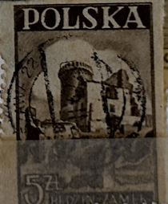
| SOURCE | TITLE| IMAGE MATCH | click to source page |
| Znaczki-pl.com | Znaczki | 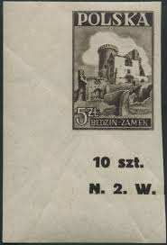 |
| eBay | POLAND STAMP - 1946 Historical Monuments 5 ZL (DX2) | eBay | 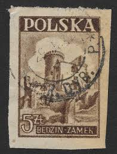 |
| just touched the stamps topic and going through all of my grandpa's & his dad's collection.. thought I share some of many interesting finds : r/askStampCollectors | 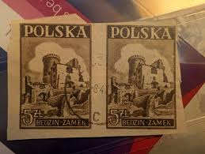 | |
| Znaczki-pl.com | Znaczki | 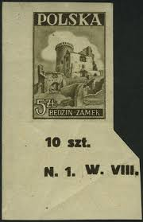 |
| Znaczki-pl.com | Znaczki | 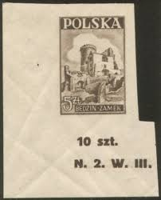 |
| Todocolección | polonia, 1971, vi congreso del partido, yt 1971 - Buy Antique stamps of Poland on todocoleccion | 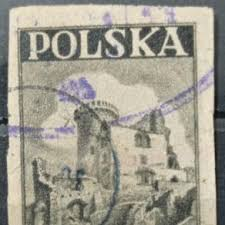 |
| Jay Smith & Associates | Jay Smith & Associates: World: Europe: Poland Stamps | 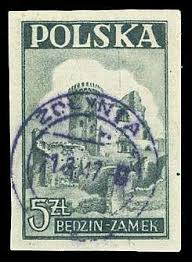 |
| Shutterstock | 9+ Thousand Carta Envio Postal Royalty-Free Images, Stock Photos & Pictures | Shutterstock | 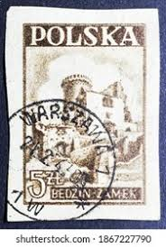 |
| eBay | Poland 1946 5z BEDZIN CASTLE Brown SC 393 MNH | eBay | 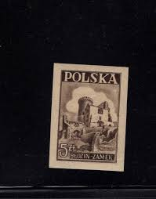 |
| In early 1900 Austrian Authorities finally allowed the citizens of Krakow to BUY back the Wawel Castle they previously stole. Lets just it didn't quiet looked like when they first “acquired”it. | 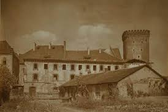 | |
| lubelskistamps.com | Poland Stamps – Polish Stamp Specialist | 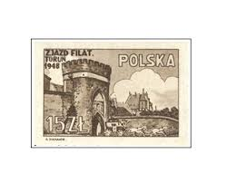 |
| Tripadvisor | THE BEST Museums You'll Want to Visit in Kamien Pomorski (2026) | 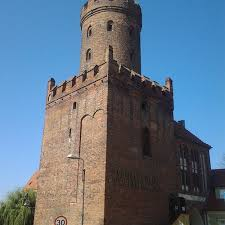 |
| postbeeld.com | Stamp 1977, Poland Architectural heritage 6v, 1977 - Collecting Stamps - PostBeeld - Online Stamp Shop - Collecting | 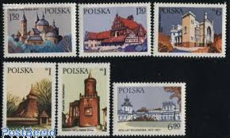 |
| allnumis.com | 15 złotych 1948 - Stagecoach leaving Torun Gate, National and International event - Poland - Stamp - 10238 | 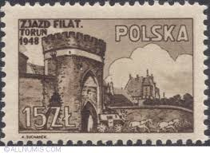 |
| HipStamp | Poland 2242 Wolin Gate 1.00zł 1977 | Europe - Poland, General Issue Stamp / HipStamp | 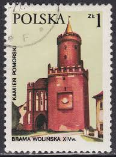 |
| HipStamp | Poland 1946 Sc 393 Bedzin Castle Vertical Pair of 2 Stamp Used | Europe - Poland, General Issue Stamp / HipStamp | 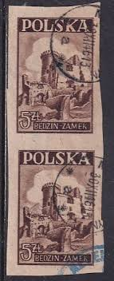 |
| allnumis.com | 40 Groszy 1971 - Wiśnicz Castle, 1971 - Poland - Stamp - 34129 | 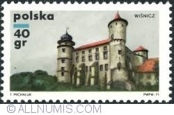 |
| eBay | POLAND (POLSKA) 5 CUT ENVELOPE STAMPS | eBay | 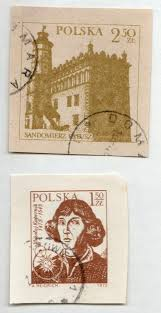 |
| Alamy | Stamp printed in poland hi-res stock photography and images - Page 16 - Alamy | 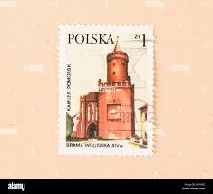 |
| stephendanko.com | Administrative Structure of the Pułtusk Powiat | Steve's Genealogy Blog | 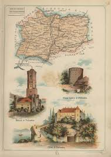 |
| 1977r. Znaczki z PRL. Zabytki architektury. Zamek w Kórniku. Pałac... (@m.....3) | 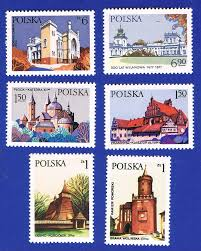 | |
| eBay | POLAND LOT 1940'S-50'S S393+S398-40+S756 USED | eBay | 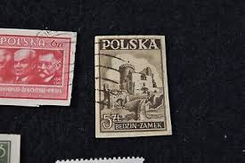 |
| Znaczki-pl.com | Znaczki | 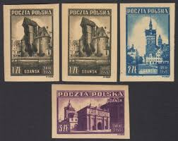 |
| Find Your Stamps Value | Tourist Type of 1969: Castle, Legnica 60g Multicolored stamp price, value | 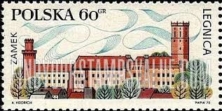 |
| Wikimedia.org | File:Robert Scholz Görlitz Marienplatz 1892.JPG - Wikimedia Commons | 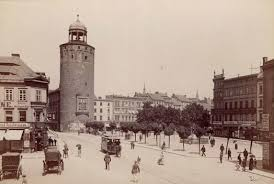 |
| eBay | Poland 2242-2247, MNH. Michel 2531-2538. Architectural landmarks, 1977. | eBay | 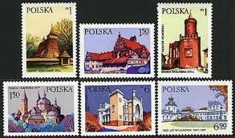 |
| one.bid | Krakow - Wawel Castle, ca. 1910 - Online auction / Online bidding - Price - OneBid | 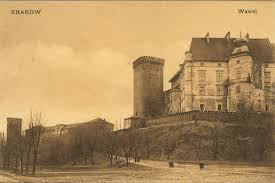 |
| eBay | POLAND Sc # 4290 FDC 700th ANN OF CITY of LUBLIN, MAJOR CENTER JEWISH LEARNING | eBay | 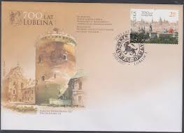 |
| eBay | Sobre usado POLONIA 1980 Ck # 064. Ayuntamiento en Sandomierz. | eBay | 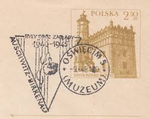 |
| Amazon.com | Amazon.com: Wlodzimierz Sochacki: books, biography, latest update | 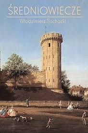 |
| FreeImages | Stamp Printed In Usrr Of Karl Marx , Stock Photo – Royalty-Free Images | FreeImages | 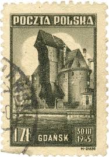 |
| First Issues Collectors Club | Poland First Issues | 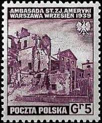 |
| Miraheze | Poland – exile government issues - Stamp Encyclopedia | 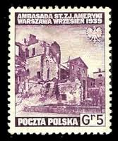 |
| Todocolección | sello polonia, 5 zl, bedzin zamek, año 1946, si - Buy Antique stamps of Poland on todocoleccion | 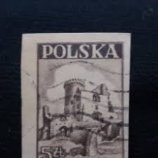 |
| AbeBooks | Künstler Ansichtskarte / Postkarte Karopka, F., Zagórze Kynau Schlesien, Kynsburg: Manuscript / Paper Collectible | akpool.de - akpool GmbH | 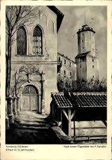 |
| tbeartravels.com | Northern Germany: To the Oder-Neisse bike path | Fred and Bev's Odyssey | 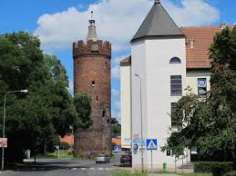 |
| Alamy | City stamp hi-res stock photography and images - Alamy | 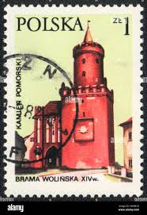 |
| GetArchive | Złotoryja Goldberg 002. German postcard - PICRYL - Public Domain Media Search Engine Public Domain Image | 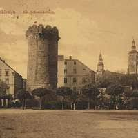 |
| Alamy | POLAND - CIRCA 1977: a stamp printed in the Poland shows Bilberry, Vaccinium Myrtillus, Forest Fruit, circa 1977 Stock Photo - Alamy | 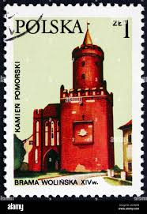 |
| Wikipedia | Sobieszów - Vikipedio | 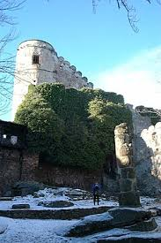 |
| GetArchive | 10 Cottbus Germany Image: PICRYL - Public Domain Media Search Engine Public Domain Search} | 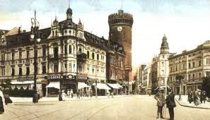 |
| bwdavis.us | WW Poland 1957 to date - Collectibles of Bwdavis | 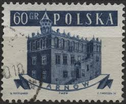 |
| WorthPoint | Vintage Krakow Mini Wood Souvenir Picture Book | #2107865323 | 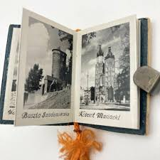 |
| eBay UK | Decimal Postage Polish Stamps for sale | eBay UK | 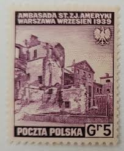 |
| Chisholm-Poster | Pologne - Visitez Raczkow la Carcassonne Polonaise | Original Vintage Poster | Chisholm Larsson Gallery | 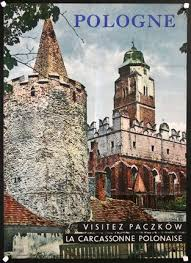 |
| Wikimedia.org | File:Erwin Spindler Ansichtskarte Cottbus-Spremberger Straße.jpg - Wikimedia Commons | 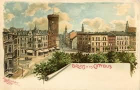 |
| Tripadvisor | THE 10 BEST Things to Do Near Kamien Pomorski Station (2026) | 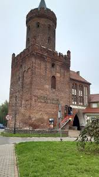 |
| Alamy | Poland stamp castle hi-res stock photography and images - Alamy | 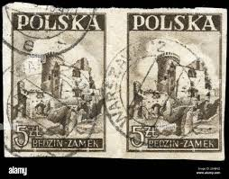 |
| one.bid | POPIŃSKI Piotr, Gdańsk on an Old Postcard, 1996 - Online auction / Online bidding - Price - OneBid | 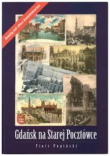 |
| one.bid | Edward HARTWIG (1909-2003), Z cyklu: Wierzby - Online auction / Online bidding - Price - OneBid | |
| Find Your Stamps Value | Cracow Restoration Type of 1982: Collegium Maius, Jagiellonian Museum 5z Multicolored stamp price, value | |
| www.turturi.com | Palaces and castles in Poland - interesting places, museums and exhibitions | |
| one.bid | Stanislaw RACZYÑSKI (1903-1990), Wawel - Kurza Stopka - Online auction / Online bidding - Price - OneBid | |
| Amazon.com | Amazon.com: Był sobie Gdańsk 1945 (Polish Edition): 9788390601830: Donald Tusk: Books | |
| Mindtrip | Altana Eichendorffa in Nysa - Ask AI | mindtrip | |
| Booking.com | Zamek Joannitów, Łagów (updated prices 2026) | |
| Alamy | Nowy wisnicz hi-res stock photography and images - Alamy | |
| Shutterstock | Poland Circa 1958 Stamp Printed Poland Stock Photo 68070673 | Shutterstock | |
| Golden Age Posters | 1939 The Cracow Pageant Poster by Witold Chomicz Poland Krakow Vintage – Golden Age Posters |
{kind=link}
{kind=link}